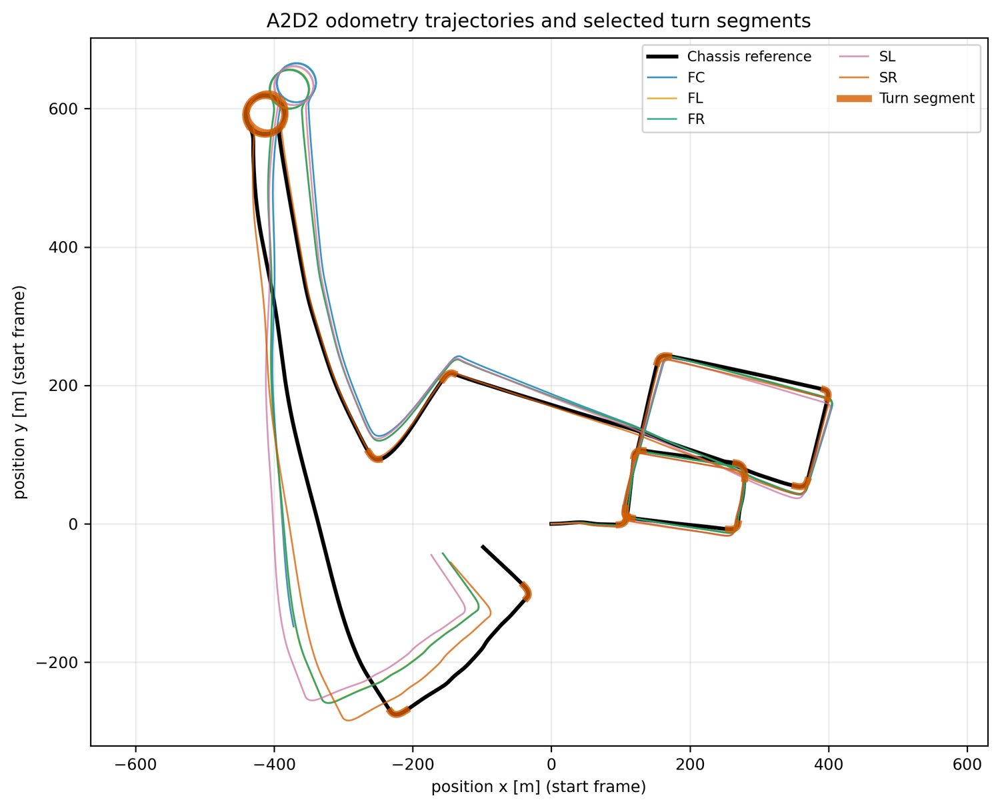
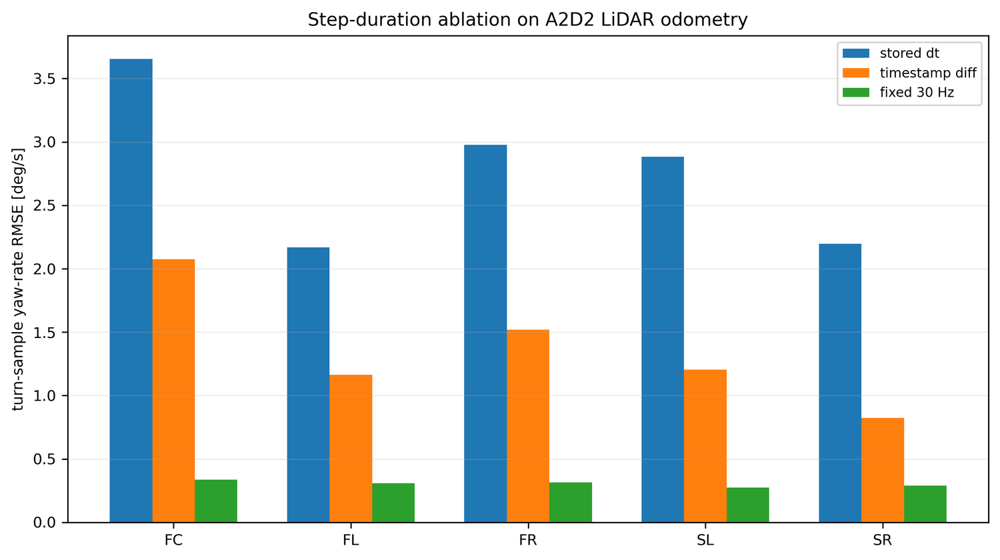
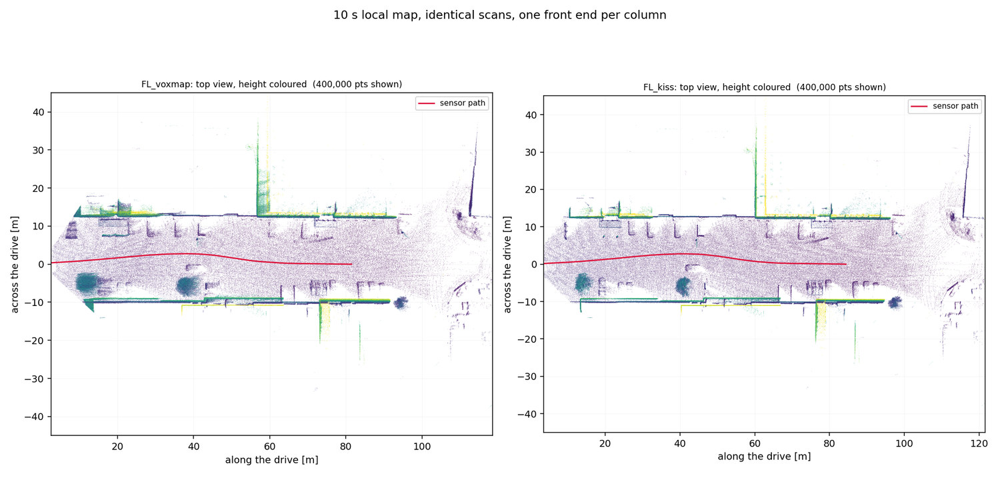

Odometry front end results
How well the motion input actually tracked, per channel and per drive: path-length agreement against the released pose stream, the deskew and voxel settings that decide whether tracking survives, the A2D2 timestamp defect, and the two datasets where the front end was the limit.
1 What the calibrator sees
NH-Calib never touches points. It consumes a per-sensor twist — linear and angular velocity with timestamps — so every front-end defect arrives at the estimator already converted into a velocity error. A ground-truth-trajectory control run makes the split explicit: feeding the estimator the released pose stream instead of odometry brings the Ford lateral error down to 0.82 mm on the same windows, against about 12 mm for odometry input. The estimator is not the bottleneck; the twist is.

2 Ford: per-channel tracking quality
Each of the four Ford channels is tracked independently over the whole drive. Path length against the released pose stream is the cheapest honest check: it is sensitive to scale error and to lost tracking, and it needs no alignment.
| Log | Channel | Frames | Path length [m] | Reference distance [m] | Ratio | Yaw-rate p95 [deg/s] |
|---|---|---|---|---|---|---|
| Log4 | RED | 6,615 | 4,478.2 | 4,473.9 | 1.0010 | 8.39 |
| Log4 | YELLOW | 6,620 | 4,474.1 | 4,473.9 | 1.0000 | 7.50 |
| Log4 | BLUE | 6,609 | 4,476.0 | 4,473.9 | 1.0005 | 8.42 |
| Log4 | GREEN | 6,614 | 4,376.2 | 4,473.9 | 0.9782 | 6.31 |
| Log5 | RED | 8,125 | 7,464.5 | 7,461.8 | 1.0004 | 12.91 |
| Log5 | YELLOW | 8,133 | 7,310.5 | 7,461.8 | 0.9797 | 11.55 |
| Log5 | BLUE | 8,130 | 7,460.9 | 7,461.8 | 0.9999 | 13.04 |
| Log5 | GREEN | 8,127 | 7,441.7 | 7,461.8 | 0.9973 | 11.55 |
| Log6 | RED | 5,739 | 5,261.0 | 5,255.9 | 1.0010 | 13.41 |
| Log6 | YELLOW | 5,733 | 5,237.7 | 5,255.9 | 0.9965 | 10.74 |
| Log6 | BLUE | 5,749 | 5,262.2 | 5,255.9 | 1.0012 | 13.87 |
| Log6 | GREEN | 5,746 | 5,257.3 | 5,255.9 | 1.0003 | 11.75 |
- Ten of the twelve channels land within 0.3 % of the reference distance.
- The two outliers — Log4 GREEN at 0.978 and Log5 YELLOW at 0.980 — are the same channels that carry the largest mounting pitch, and they are the channels with the weakest per-segment quality scores.
- A 2 % path deficit is not visible in a trajectory plot but is exactly the kind of differential scale error that integrates into the lateral estimate.
3 Deskew is not optional on Ford
An HDL-32E completes one revolution in roughly 0.1 s. At 6 m/s the sensor moves about 0.6 m during a single sweep, which is twice the registration voxel. Three deskew conditions were run end to end.
| Condition | Log4 [mm] | Log5 [mm] | Log6 [mm] | Mean [mm] | Common windows kept |
|---|---|---|---|---|---|
| External point-time deskew | 32.91 | 24.72 | 8.01 | 21.88 | 5 / 14 / 8 |
| KISS internal deskew | 32.91 | 24.72 | 8.01 | 21.88 | 5 / 14 / 8 |
| No deskew | 345.48 | 370.79 | 353.95 | 356.74 | 4 / 8 / 3 |
- Turning off deskew costs a factor of 10.5 to 44 depending on the log.
- It also costs segments: the number of accepted common windows drops in every log, so the damage is visible in the quality gates before it is visible in the error.
- External and internal deskew are numerically tied. Neither can be described as better.
4 Voxel size: the failure is abrupt
A planned sweep over registration voxel sizes stopped at its first cell. At 0.10 m the front end collapsed rather than degrading: the GREEN channel's median speed statistic fell to 0.49 m/s against 5.93 m/s at 0.30 m, and YELLOW to 3.13 m/s against 6.06. RED and BLUE were unaffected. With two channels lost, only one turn could be associated and the lateral stage raised an error instead of producing a number.
- A finer voxel is not a conservative choice here. It removes the structure the scan matcher needs in a sparse 32-beam cloud.
- The same pattern was seen independently on another dataset, where a 0.10 m voxel dropped the segment pass rate from 78 % to 53 % against 0.30 m.
- The remaining sweep points (0.20, 0.40, 0.60 m) were never run, because the runner aborted the whole experiment on the first cell's exception instead of isolating it. No voxel-sweep numbers exist.
5 A2D2: the stored frame interval is defective
A2D2 stores a per-frame time interval alongside the scans. Those stored intervals alternate: successive values swing high and low around the true rate, giving a lag-one autocorrelation near −0.5. Reconstructing velocity from pose increments divided by such an interval injects an alternating velocity error into every channel.
| Channel | Interval CV | Frames disagreeing with the timestamp difference by >2 % | Lag-1 autocorrelation | Turn yaw-rate RMSE, stored → fixed [deg/s] |
|---|---|---|---|---|
| FRONT_CENTER | 0.286 | 90.1 % | −0.458 | 3.32 → 0.88 |
| FRONT_LEFT | 0.139 | 71.8 % | −0.496 | 1.92 → 0.32 |
| FRONT_RIGHT | 0.171 | 75.4 % | −0.498 | 2.64 → 0.34 |
| SIDE_LEFT | 0.169 | 74.9 % | −0.489 | 2.62 → 0.38 |
| SIDE_RIGHT | 0.119 | 53.6 % | −0.478 | 2.03 → 0.65 |
The same statistics were computed on the other candidate datasets to check whether the defect is general. It is not: the other multi-LiDAR sources show interval variation of 0.2–2 %, disagreement rates below 0.3 %, positive lag-one autocorrelation, and turn yaw-rate RMSE that is unchanged to four digits when the interval definition is swapped. A2D2 is the only affected dataset.

6 RadarScenes: why the input is constructed
Geometric radar odometry was not usable on this data. The detections are too sparse and too weakly structured to register scan to scan; the co-visibility measurements on the inventory page show cross-pairs at 0.000 to 0.022. The motion input is therefore Doppler ego-velocity combined with a CAN yaw rate, aligned iteratively.
| Sensor | Estimated clock offset [ms] | Yaw-rate RMSE before → after [deg/s] | Forward-velocity residual RMS [m/s] | Samples |
|---|---|---|---|---|
| RADAR_1 | −116.75 | 2.23 → 1.94 | 0.116 | 19,114 |
| RADAR_2 | −112.50 | 5.25 → 4.48 | 0.286 | 19,300 |
| RADAR_3 | −115.50 | 4.09 → 4.04 | 0.257 | 19,254 |
| RADAR_4 | −115.25 | 2.01 → 1.76 | 0.105 | 19,176 |
7 Backend choice and the datasets it could not save
| Case | Observation | Consequence |
|---|---|---|
| Ford Log4, GICP instead of KISS-ICP | 67.56 mm versus 32.93 mm lateral error on the same windows | the point-to-plane variant was not adopted; the difference is front-end quality, not estimator behaviour |
| A truck dataset with side LiDARs | turn yaw-rate disagreement of 26–28 deg/s on the side channels, while the frame-interval statistics are clean | the limit is odometry quality, not timing; excluded from results |
| A six-LiDAR dataset | per-channel rotation disagreement of 4–9 deg/s; every method tested lands in the same error band as a trivial zero estimator | no ranking can be drawn from it; reported as a limitation |

See also
- Datasets & front end — the configuration table for the reported runs
- Ablation catalogue — the controlled experiments these observations motivated
- Gates & failure modes — how a bad twist is detected at run time